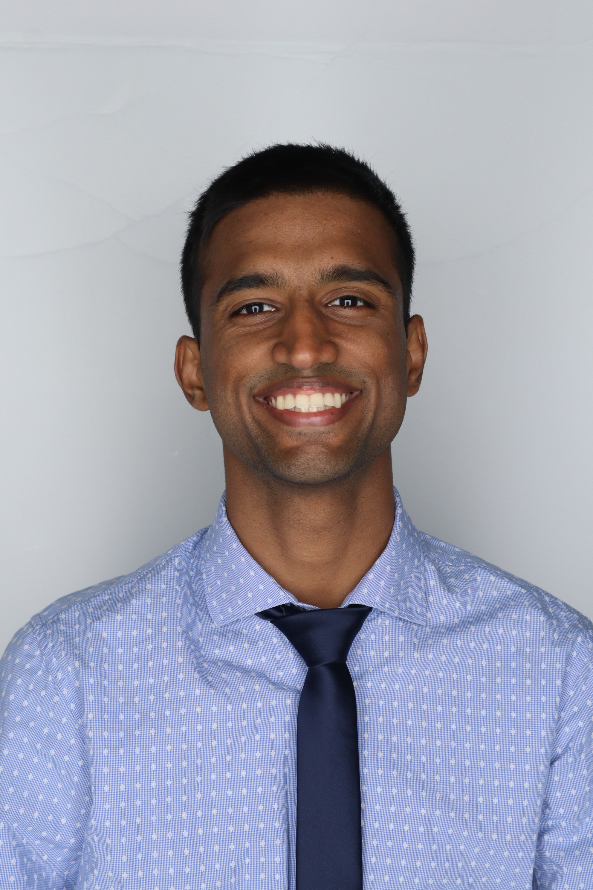
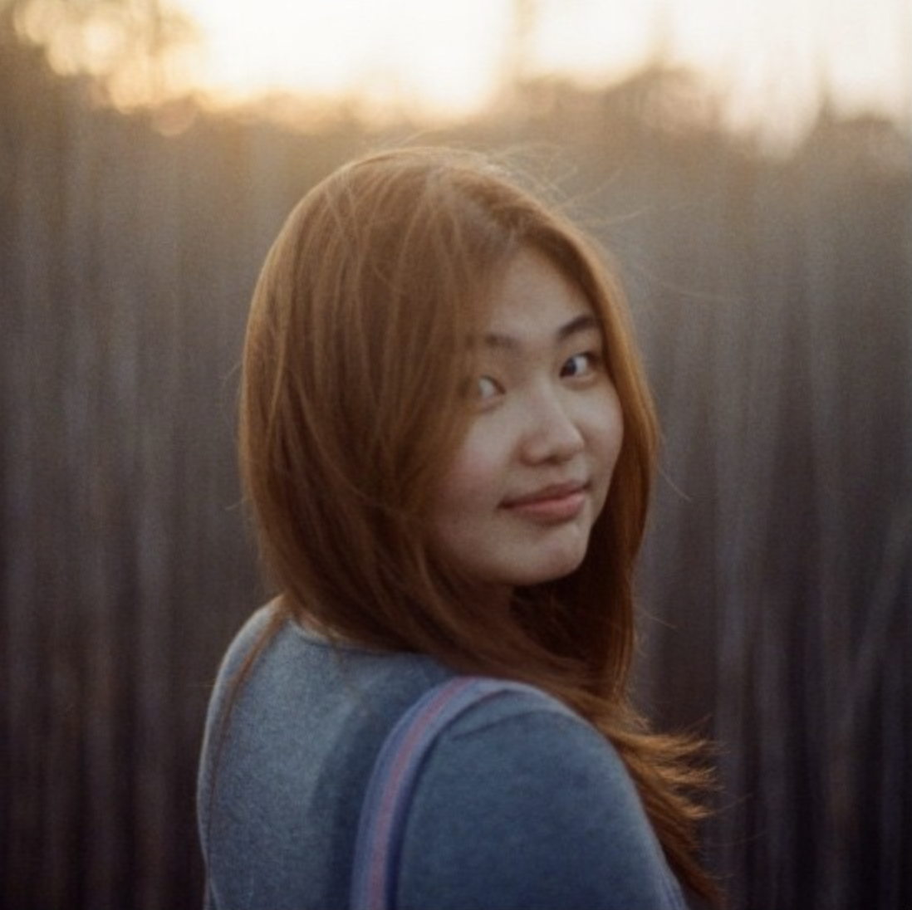
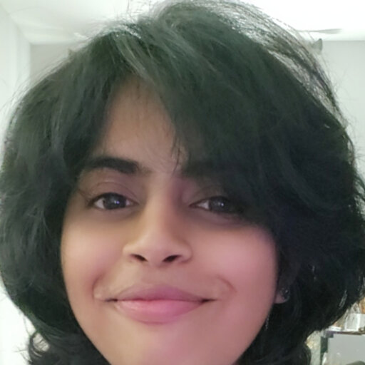
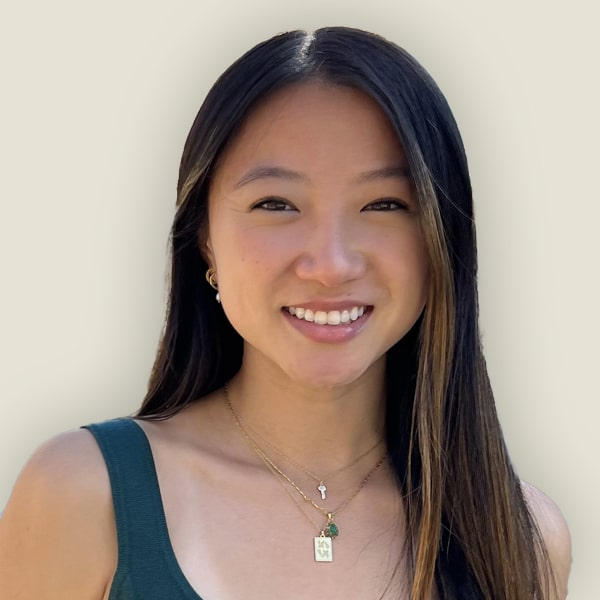

My Mentees
I have had the privilege of mentoring undergraduate, master's, and PhD students in neuroengineering, neuromodulation, optical imaging, and electrophysiology. Below are some of the students I have worked with.

Lloyd Lobo
Doctorate Student
Lloyd is a PhD candidate at Carnegie Mellon University as a part of Chamanzar Lab in the Electrical and Computer Engineering Department. His research mainly focuses on designing in situ sculpted waveguides for light delivery and imaging of biological tissue. His projects also span system integration between complex lensing systems and imaging techniques such as optical coherence tomography.

Zoe White
Master's Student
Zoe White is a graduate student in Electrical and Computer Engineering at Carnegie Mellon University. Her interests include neural engineering, medical devices, and biofabrication, with a focus on projects that bridge engineering and biology. Outside of academics, she enjoys running, crocheting, and exploring side projects that combine creativity and design." maybe?

Gina Seo
Master's Student
Gina Seo is an undergraduate and master’s student in Electrical and Computer Engineering passionate about the intersection of biology and technology. She is particularly interested in how senses like olfaction relate to neurological diseases and inspire innovations in multi-sensory technology. Outside of the lab, Gina produces music, cooks creative dishes, and engages in entrepreneurial projects.

Kanika
Research Assisstant
Kanika wroked as Rsearch Associate in Chamanzar Lab and assissted with different neurobiology projects. In Chamanzar Lab she gained expertise in ex-vivo electrophysiology, in-vivo neural recording and animal husbandary maintaiance.

Mona Yuan
Undergaduate Student
Focus on developing and testing non-invasive neural interfaces under the mentorship of Dr. Maysam Chamanzar and Dr. Vishal Jain.

Hassan Malekoshoaraie
Doctorate Student
Hassan joined Chamanzar Lab as Ph.D student. He worked on designing high-density flexible optoelectric neural probes for high resolution recording and optogenetic stimulation of brain activity. He got trained for ex-vivo experiments including Calcium imaging in Brain slice of transgenic mice.
Share Your Experience
If you have worked with me as a mentee or trainee, you are welcome to share your experience using the link below.
Share Your Experience